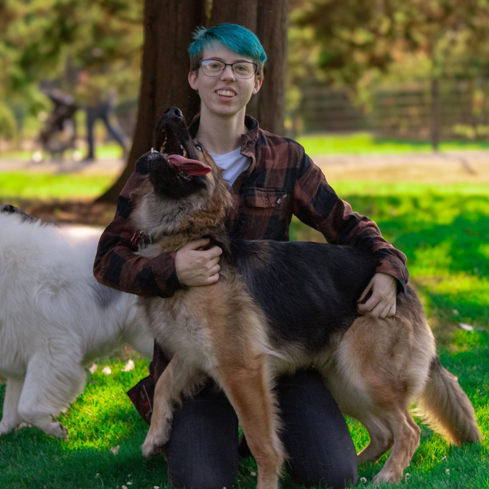

Behavior modification is primarily for dogs that are dealing with reactivity, resource guarding, chasing, biting, or other behaviors that lend thmeselves to dangerous situations. Dogs who have been kicked out of daycare are often great candidates for behavioral modification. Dogs who bark and lunge at other dogs and people are the dogs that usually come to mind when we think of behavior modification, but the vast majority of dogs can benefit from behavior modification skills. When we're doing training to specifically modify behaviors we don't like, we have to learn how to communicate to our dogs that we'd much rather they do something else, and also help them figure out what that something else should be.
The most important thing in behavior modification is safety. Depending on what behaviors need to be modified, safety can take many forms. Distance from known triggers is a big piece of keeping everyone safe - if the dog stays below threshold, they won't flip into fight or flight mode. Reactive dogs often are often very spatially sensitive, keeping your distance from potential triggers can be the most effective way to keep your dog from reacting, and keep everyone safe. Sometimes, a basket muzzle or a tie-back system may be appropriate to keep humans and dogs safe.
Obedience based behaviors like sit and down are often good foundations for behavior modification, but most training sessions will be focused on emotional state and learning how to recognize when your dog is getting overwhelmed, overstimulated, or over threshold. Distance, duration, and difficulty are three things that we focus on in obedience classes that also matter in behavior mod, but we utilize them in slightly different ways.
Oftentimes behavior modification requires setting boundaries and holding your dog accountable within those boundaries. Things like threshold manners, loose leash walking, and learning how to settle on a bed are very important foundations to lay with dogs going through a behavioral modification program.
Rewards are always a resource. Whether you want to reward your dog with food, play, or praise, you are always rewarding your dog with a resource they only have access to through you.
Behavior modification requires a deep understanding of canine emotions and body language. Oftentimes, reactive dogs are taking situations into their own paws. If a dog can't look to you for consistent, reliable guidance, they will make their choices on how to deal with a situation - unfortunately making the situation worse a lot of the time!
When dogs bark, it means they're experiencing some pretty intense emotions! It could be based out of fear, defensiveness, prey drive, or frustration. Many dogs see other animals or people as a threat and bark and lunge to keep them away - others desperately want to greet or play and bark and lunge out of excitement and frustration. Either way, the reacting dog needs to know that they're safe, and they can rely on you to show them how to behave.
Depending on why the dog is reacting, we can reward the behavior we like by moving away from whatever they're barking about, or by moving towards it. If a dog is so excited to see another dog that they're barking and lunging about it - you moving towards that other dog, or the other dog moving towards them, is going to reward that barking and lunging behavior. If the dog is acting out of a desire to keep themself safe, the barking and lunging is often reinforced when the trigger moves away naturally. What we want to do is control when and how the dog is approached by whatever is triggering the reactive behavior, and control the space between the dog and the trigger in a way that is going to reinforce calm, stable behavior, where the dog looks to you for direction and reinforcement instead of looking to the environment.
Practice makes performance. It's important to practice calm, stable behavior outside of the presence of triggers, so that your dog understands the behavior we want them to perform while in the presence of triggers. If it's important to you that your dog doesn't crowd your guests, practice creating space when people walk through the front door. If it's important to you that your dog doesn't beg, teach them how to settle on a bed and then ask them to perform that behavior during meal time.


Fawn Taylor
360.440.0397
$80 per 90min session within the south Puget Sound area of Washington State
Sessions take place within your home, or at a park local to you
Venmo Information Form